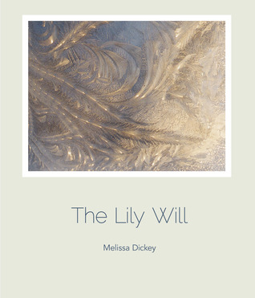
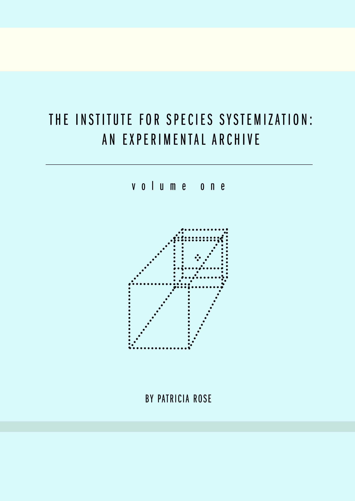
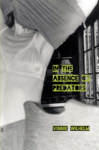
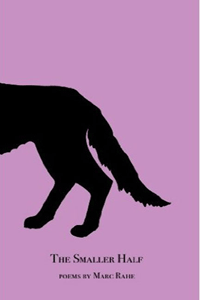
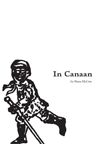
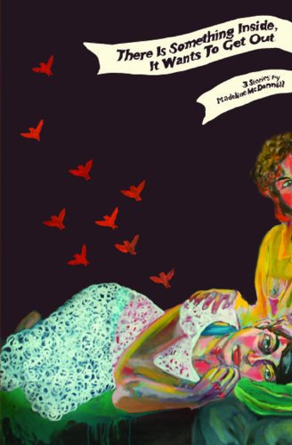
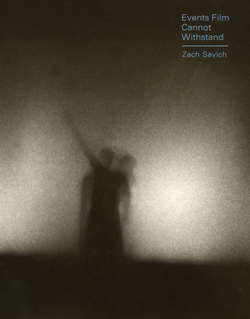
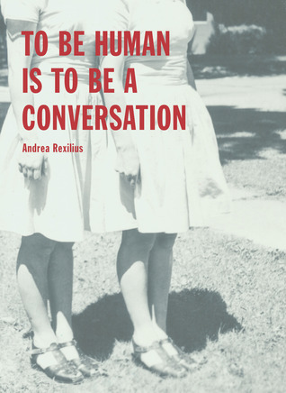

Second Year Catalogue 2011-2012
-

The Lily Will,
Melissa DickeyOblique, intelligent, and sad, The Lily Will introduces readers to a voice beautifully sustained through compressed lyrics and long, meticulous sequences. The geography of this book is one of thistles and ice, love flashed with fear, and frail bodies seeking safety in heavy weather.
In its warped miniatures (here an eye, there a red leaf, seen distended through iced glass) there is a commitment to smallness, vulnerability marked by precision, and intimations, too, of the eternal:
“What is earthly? An impulse to paradise.”
-

The Institute For Species Systemization: An Experimental Archive,
Danielle Rosen & Patricia RoseThis groundbreaking work of research, investigative scientific studies, never-before collected data, and interpreted evidence from the Institute for Species Systemization is concerned with the psychological, literal, and linguistic spaces between animals and humans.
The archive cites theories of proxemics and zoosemiotics–as well as the infamous psychological studies of Skinner and Harlow–as both precedent and provocation.
-

In the absence of Predators,
Vinnie WilhelmShot through with dark humor, desolate landscapes, and seemingly impossible plot turns, In the Absence of Predators is a striking collection that haunts long after the stories have reached their outlandish conclusions. Here we discover the most captivating of human forms: dreamers, liars, thieves, murderers, and lovers–characters provoked to search, and those abandoned by their own fates and identities.
Wilhelm’s narrative crescendos disclose the most terrifying corners of this world; there are wrecks, blizzards, asylums, agents, road trips, and an army of ghosts. In the Absence of Predators is a masterful debut of five cracked and astonishing stories.
First Year Catalogue: 2010-2011
-

The Smaller Half,
Marc RaheMarc Rahe’s concern with the body—in motion, trauma, sickness, health, intoxication, joy, wonder, and waiting—fascinates and compels one to heartbreak, desire, and resignation.
These poems are silly and strange, adaptive, fiery, and fiercely observant—as well as bent on the notion that one might attend to even the smallest of extraordinary detail.
-

In Canaan,
Shane McCraeIn Shane McCrae’s astonishing second chapbook, In Canaan, he inhabits the personae of the escaped slave Margaret Garner, who, in the mid-1800s, murdered one of her daughters in order to keep her from returning to slavery.
“I couldn’t stopHurting her because it hurt,” writes McCrae in the voice of Garner, “Before that night I never had the chance to loveAnyoneshe was the first person I loved.”
McCrae composes in broken forms and shattered fragments, retelling a harrowing historical story through the imagined first-person point of view of its tortured and terrified heroine.
-

There is something inside, it wants to get out,
Madeline McDonnellThe brief and stunning debut by fiction writer Madeline McDonnell. In these technically surprising and lyrically astounding stories, the reader meets three haunted, singular, and unsettled protagonists—Wednesday, Mary, and Lucy—who are up to and up against all sorts of horrendous and hilarious trouble.
The reader will discover in this trinity a deeply intelligent, comic, and chaotic view of consciousness, pleasure, and shame along with a panic-inducing proposal, cancer-basketball, and a series of passionate car crashes. Perhaps more importantly, the reader will fall for McDonnell’s poetic touch and her absolute attention to the magic of the sentence.
-

Events Film Cannot Withstand,
Zach Savich“I want to write you a beautiful book of prose, against not least the before-too-long loss of tongue and sense and all sun-defiant hues on the river bend, and none of us able to say or touch or see, soon enough, soon enough, aground, to give you this my voice today nevertheless, withstanding, nevertheless, given everything, for you, a clear note from a complicated bell,” begins Zach Savich in his first book of prose.
He goes on to compose a powerful, precise, and playfully chaotic book-length lyric memoir on art, process, friendship, place, and imagination.
-

To Be Human is To Be a Conversation,
Andrea RexiliusAndrea Rexilius’ first book, To Be Human Is To Be A Conversation, combines memoir, essay, performance, research, poetry, and lyric meditation to entwine, twist, and twin the physical and spiritual consequences of sisterhood. Through a series of investigations and experiments, the text transforms initial factual fragments into the bodily material of the (heard and unheard) language of intimates.
“Our crime is she began to grow in my skin,” writes Rexilius, “A con artist. A mammal. A flower at the back of my skull.”